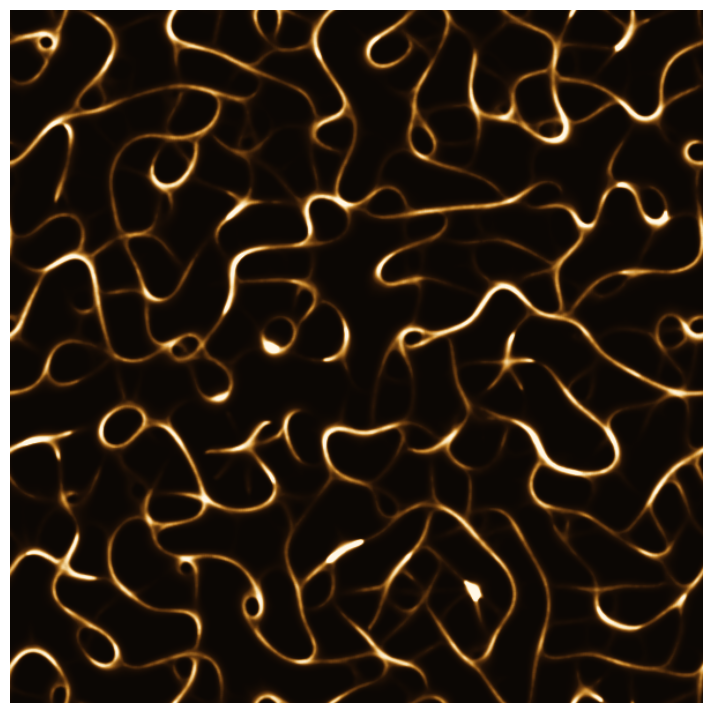
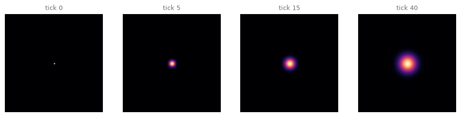
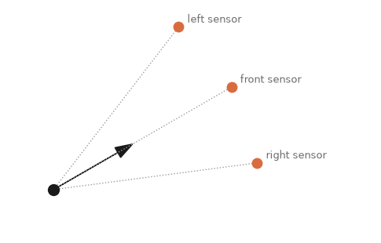
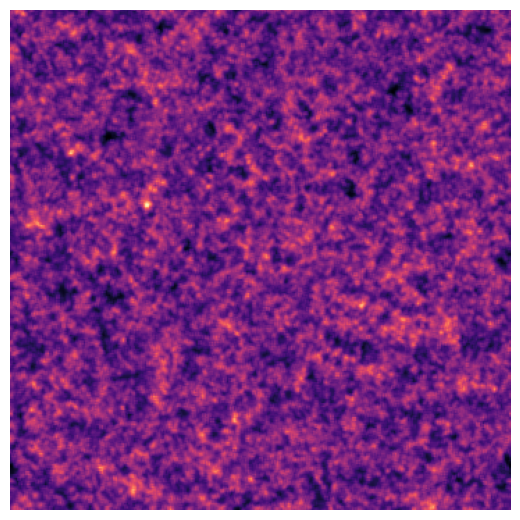
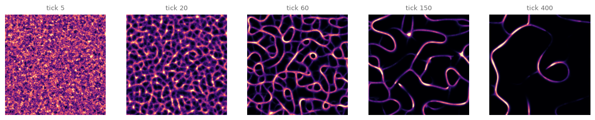
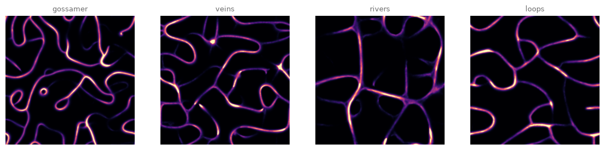
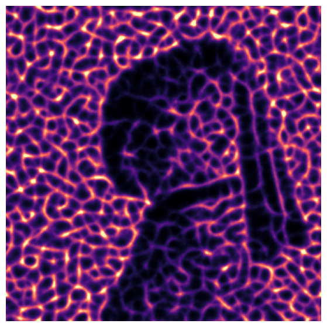
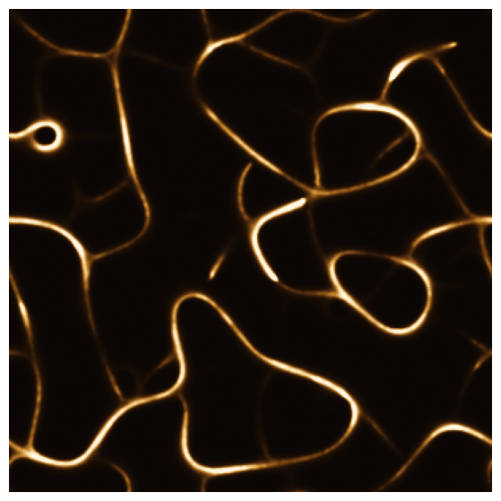
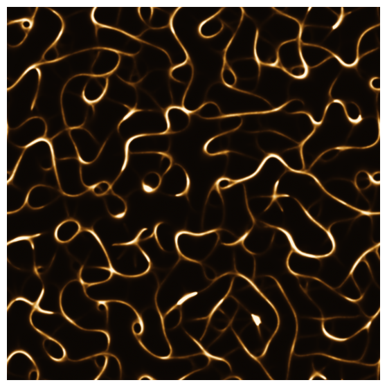

21. Physarum: The Trail-Laying Swarm#
Chapter 19’s boids watched each other. Today’s agents never meet: they read and write a shared chemical field, and out of that indirect conversation a living transport network condenses, the same trick a brainless yellow organism uses to plan railways.
Today’s destination#
Four hundred thousand invisible agents, ninety ticks of simulated time, one photograph of their shared trail field. Every glowing vein exists because agents preferred walking where other agents had walked; every dark cell is a road that lost its traffic. Nobody in the simulation has a plan, a map, or a memory beyond the fading scent of the crowd. By the end of today you can grow these networks, steer their anatomy with four dials, and make them draw pictures.
# display this chapter's showpiece (generated by the last cell of this notebook)
import os
import matplotlib.pyplot as plt
import matplotlib.image as mpimg
showpiece_path = "../assets/outputs/ch21_showpiece.png"
if os.path.exists(showpiece_path):
image = mpimg.imread(showpiece_path)
plt.figure(figsize=(9, 9))
plt.imshow(image)
plt.axis("off")
plt.show()
else:
print("Not generated yet -- run the whole notebook once and come back.")

Context: the organism that plans railways#
Physarum polycephalum, the many-headed slime mold (Schleimpilz), is a single giant cell with millions of nuclei, a bright yellow sprawl that forages across forest floors by extending a network of protoplasmic veins. It has no brain, no nervous system, no neurons. It also, demonstrably, solves routing problems. In 2000, Toshiyuki Nakagaki and colleagues showed the organism finding the shortest path through a maze between two food sources (Nature 407). In 2010, Atsushi Tero and the same group placed oat flakes on the positions of the cities around Tokyo, used light (which the organism avoids) to stand in for coastline and mountains, and let it forage: the network it settled on was comparable in efficiency, fault tolerance and cost to the actual Tokyo rail system (Science 327). The two studies earned two Ig Nobel Prizes, 2008 and 2010 (Improbable Research, winners archive), the prize for research that makes people laugh and then think; rarely has it been so precisely aimed.
Artists arrived from two directions. The UK-based artist Heather Barnett has worked with the living organism since 2008 (The Physarum Experiments) (Barnett, project page): she sets conditions, the slime mold draws, and the authorship question of chapter 27 gets a co-author with no nervous system. The other direction is ours: simulate the behavior. In 2010 Jeff Jones distilled it into a model of striking economy (Artificial Life 16), a swarm of particle agents that sense a shared trail field ahead of themselves, turn toward strength, move, and deposit more trail. That loop, sense, rotate, move, deposit, has become the standard reference model in creative coding, most visibly through the work of Sage Jenson (mxsage), whose monumental simulations extending Jones’s model are among the most recognizable images in contemporary generative art; their widely shared technical writeup (Jenson, physarum page) is in the further reading.
For this book, the chapter completes a set. Chapter 13 grew complexity on a grid, chapter 14 in a field, chapter 19 among agents that watch each other. Physarum couples agents to a field: the agents write it, the field steers them, and the coupling closes a feedback loop that neither has alone. Biologists call communication through a modified environment stigmergy (a term coined by the termite researcher Pierre-Paul Grassé (1959)); it is how ant trails and termite cathedrals work. One honesty note before we start, in Jones’s own words: this is an approximation of physarum-like network formation (Jones 2010), not a biological simulation. No cytoplasm is modeled, only the logic of trails, and the logic turns out to be where the pictures live.
The two halves of the machine#
The field. A grid of numbers, the trail (chemoattractant, for the organism; for us, paint that behaves). Each tick it does two things you already know from chapter 14: it diffuses (each cell becomes the local average, one pass of blurring) and it decays (everything is multiplied by a factor just under 1, so yesterday’s trail fades). Deposit, diffuse, decay; the field alone is chapter 14 in three lines:
# the field alone: one deposit, then diffusion and decay do their work
import numpy as np
from scipy.ndimage import uniform_filter
trail = np.zeros((90, 90))
trail[45, 45] = 500.0 # one big deposit in the middle
fig, axes = plt.subplots(1, 4, figsize=(12, 3.2))
tick = 0
for ax, target in zip(axes, [0, 5, 15, 40]):
while tick < target:
trail = uniform_filter(trail, size=3, mode="wrap") * 0.9 # diffuse, decay
tick += 1
ax.imshow(trail, cmap="magma")
ax.set_title(f"tick {target}", fontsize=9, color="#6B6B6B")
ax.axis("off")
plt.show()

The dot spreads and fades: the field is a forgetful memory, and the decay factor sets how long it holds a thought. (uniform_filter is the same local averaging chapter 14 built its Laplacian from, packaged; mode="wrap" joins the edges so our world is a torus with no walls.)
Try it. Change 0.9 to 0.8 and the memory shortens; at 0.99 the dot haunts the grid for hundreds of ticks.
The agents. Each agent is a position and a heading angle, chapter 19’s state, minus the velocity vector (all agents walk at the same speed, one pixel per tick). What is new is the sense step. Three sensors ride ahead of each agent, at distance \(d\), one straight ahead and one rotated \(\pm\alpha\) to each side:
The agent reads the trail at all three points and turns, by a fixed angle, toward the strongest reading (straight if the front wins; and if the front reads weakest of the three, the agent is confused and flips a coin). Then it moves and deposits. Sense, rotate, move, deposit, forever. (One bookkeeping note: on the y-up diagram below, “left” is the \(+\alpha\) sensor; on the image grid, where the y axis grows downward, it is \(-\alpha\). The model is symmetric, so only the labels care.)
# one agent's anatomy: heading arrow, and the three sensors riding ahead
sensor_dist, sensor_angle = 9, np.deg2rad(22.5)
theta = np.deg2rad(30)
fig, ax = plt.subplots(figsize=(6, 4.4))
ax.arrow(0, 0, 4 * np.cos(theta), 4 * np.sin(theta), head_width=0.5,
color="#1A1A1A", length_includes_head=True)
labels = ["left sensor", "front sensor", "right sensor"]
for offset, label in zip([sensor_angle, 0.0, -sensor_angle], labels):
sx = sensor_dist * np.cos(theta + offset)
sy = sensor_dist * np.sin(theta + offset)
ax.plot([0, sx], [0, sy], ":", color="#9C9C9C", lw=1)
ax.plot(sx, sy, "o", color="#D96C3F", markersize=9)
ax.annotate(label, (sx, sy), textcoords="offset points", xytext=(8, 4),
fontsize=9, color="#6B6B6B")
ax.plot(0, 0, "o", color="#1A1A1A", markersize=10)
ax.set_aspect("equal")
ax.set_xlim(-2, 14)
ax.set_ylim(-2, 8)
ax.axis("off")
plt.show()

Blind agents first#
Before the sensors earn their keep, the negative control: what does the swarm draw when nobody can sense anything? Thirty thousand agents, random headings with a random wobble, depositing as they go.
# the negative control: deposit without sensing is just noise with momentum
rng = np.random.default_rng(17)
size, n_agents = 360, 30000
x = rng.uniform(0, size, n_agents)
y = rng.uniform(0, size, n_agents)
heading = rng.uniform(0, 2 * np.pi, n_agents)
blind_trail = np.zeros((size, size))
for step in range(200):
heading += rng.normal(0, 0.3, n_agents) # wobble, but no sensing
x = (x + np.cos(heading)) % size # % size: walk off one edge,
y = (y + np.sin(heading)) % size # reappear on the other
np.add.at(blind_trail, (y.astype(int), x.astype(int)), 1.0)
blind_trail = uniform_filter(blind_trail, size=3, mode="wrap") * 0.9
plt.figure(figsize=(6.5, 6.5))
plt.imshow(blind_trail, cmap="magma")
plt.axis("off")
plt.show()

Fuzz. Perfectly honest fuzz: thirty thousand chapter-1 random walks, politely fading. Remember this picture, because the only thing we add next is the ability to smell, and the difference is the whole chapter.
(One numpy honesty note: the deposit line uses np.add.at(trail, (rows, cols), 1.0) instead of trail[rows, cols] += 1.0, because when two agents stand on the same cell, plain += writes the cell twice and keeps only one deposit; np.add.at adds every single one.)
The engine#
Now the full loop, as one function. Beyond the sense-rotate-move-deposit cycle it takes an optional start (agent starting positions; the default is everywhere at random) and an optional food (grid cells that receive a free trail bonus every tick; exercise (b) will feed it), and it can photograph the field at requested snapshots. At about thirty lines it is the second engine in two chapters; the pattern of chapter 20 repeats deliberately, because this is how simulation code is shaped. One idiom to read with confidence: the steering lines multiply angles by booleans. go_left is True or False per agent, worth 1 or 0 in arithmetic (chapter 20’s counting trick), so each agent turns by turn, -turn, or nothing, all thirty thousand at once with no if.
# the Jones model: sense the field ahead, turn toward strength, walk, deposit
def physarum(size=360, n_agents=30000, n_steps=400, sensor_dist=9,
sensor_angle=np.deg2rad(22.5), turn=np.deg2rad(45), decay=0.90,
seed=17, start=None, food=None, snapshots=()):
rng = np.random.default_rng(seed)
if start is None:
x = rng.uniform(0, size, n_agents)
y = rng.uniform(0, size, n_agents)
else:
x, y = start[0].copy(), start[1].copy()
heading = rng.uniform(0, 2 * np.pi, len(x))
trail = np.zeros((size, size))
shots = {}
for step in range(n_steps):
readings = []
for offset in (-sensor_angle, 0.0, sensor_angle):
sx = (x + sensor_dist * np.cos(heading + offset)).astype(int) % size
sy = (y + sensor_dist * np.sin(heading + offset)).astype(int) % size
readings.append(trail[sy, sx])
left, front, right = readings
confused = (front < left) & (front < right) # weakest ahead: coin flip
go_left = (left > front) & (left >= right) & ~confused
go_right = (right > front) & (right > left) & ~confused
coin = rng.random(len(x)) < 0.5
heading = (heading - turn * (go_left | (confused & coin))
+ turn * (go_right | (confused & ~coin)))
x = (x + np.cos(heading)) % size
y = (y + np.sin(heading)) % size
np.add.at(trail, (y.astype(int), x.astype(int)), 1.0)
if food is not None:
trail[food] += 2.0 # standing invitation
trail = uniform_filter(trail, size=3, mode="wrap") * decay
if step + 1 in snapshots:
shots[step + 1] = trail.copy()
return trail, shots
Run it, and watch the field over time:
# the wow cell: a network condenses out of noise, then edits itself
trail, shots = physarum(n_steps=400, snapshots=(5, 20, 60, 150, 400))
fig, axes = plt.subplots(1, 5, figsize=(15, 3.4))
for ax, (when, field) in zip(axes, shots.items()):
# vmax = the 99.5th percentile, the value 99.5% of pixels stay below;
# without it the brightest few pixels would crush the rest
ax.imshow(field, cmap="magma", vmax=np.percentile(field, 99.5))
ax.set_title(f"tick {when}", fontsize=9, color="#6B6B6B")
ax.axis("off")
plt.show()

Read it left to right, and compare with the blind fuzz. By tick 20 the fuzz has curdled into filaments; by tick 60 the filaments have joined into a dense web; and then something stranger happens: the network starts editing itself. Redundant threads lose traffic, fade below the sensors’ notice, and vanish; junctions merge; loops simplify. By tick 400 the swarm maintains a few confident boulevards. That editing is not our code, there is no line that prunes; it is the feedback loop finding that two parallel roads cannot both keep their scent. Tero’s slime mold did exactly this to the Tokyo network (Tero et al. 2010), which is why its final map was efficient and not merely connected. The price of efficiency is visible too: the late network serves far fewer places. Every stage of this filmstrip is a defensible artwork, and when to stop is the physarum artist’s first authored decision.
Try it. Re-run the wow cell with sensor_dist=18: the whole anatomy doubles its wavelength, coarser veins, wider cells, because agents plan further ahead. Then try decay=0.97 and watch the network drown in its own memory.
Four anatomies#
The dials interact, but four presets span the space well:
# four presets: the same swarm, four anatomies
presets = [
("gossamer", dict(sensor_dist=4, decay=0.92, n_steps=200)),
("veins", dict(sensor_dist=9, n_steps=150)),
("rivers", dict(sensor_dist=18, n_steps=300)),
("loops", dict(sensor_angle=np.deg2rad(60), turn=np.deg2rad(75), n_steps=300)),
]
fig, axes = plt.subplots(1, 4, figsize=(14, 3.8))
for ax, (name, kwargs) in zip(axes, presets):
field, _ = physarum(**kwargs)
ax.imshow(field, cmap="magma", vmax=np.percentile(field, 99.5))
ax.set_title(name, fontsize=9, color="#6B6B6B")
ax.axis("off")
plt.show()

Look and compare. Gossamer is all capillaries, rivers is all highways, and what mainly separates them is a single number, how far ahead an agent smells (the other dials differ only slightly). The loops preset turns hard and often, so its roads curl back on themselves. Which anatomy feels most alive to you, and which most designed? (Most people say the middle two; it is worth asking what that implies about the scales at which we recognize life.)
The swarm as portraitist (bonus)#
The agents’ starting positions are ours to choose, and chapter 15 taught us how to turn an image into positions: rejection sampling by darkness. Seed the swarm where the Vermeer is dark, stop early, before the editing phase erases the evidence, and the network is a drawing of the painting, in the medium of traffic.
# seed the swarm by image darkness (chapter 15's rejection sampling), stop early
from PIL import Image
girl = Image.open("../assets/images/vermeer_pearl_earring.jpg")
darkness = 1 - np.asarray(girl.convert("L").resize((360, 360))) / 255
rng = np.random.default_rng(12) # this cell's own generator
placed_x, placed_y = [], []
while len(placed_x) < 120000:
cx, cy = rng.uniform(0, 360, 50000), rng.uniform(0, 360, 50000)
keep = rng.random(50000) < darkness[cy.astype(int), cx.astype(int)]**1.5
placed_x.extend(cx[keep])
placed_y.extend(cy[keep])
start = (np.array(placed_x[:120000]), np.array(placed_y[:120000]))
portrait, _ = physarum(n_steps=15, start=start, sensor_dist=6)
plt.figure(figsize=(7, 7))
plt.imshow(portrait, cmap="magma", vmax=np.percentile(portrait, 99.5))
plt.axis("off")
plt.show()

Fifteen ticks: long enough for the web to form, short enough that it still lives where it was born. The girl exists in this image only as a difference in traffic density, which is, come to think of it, also how chapter 15’s stipples drew shadow, and how chapter 24’s heatmaps of attention will complete the family: images made of where-things-are.
Export your artwork#
Choose a preset (or an anatomy of your own), a moment to stop, and a palette: the render below dresses the trail field in a custom colormap exactly as chapter 20 dressed its frost. Replace yourname and run.
# save YOUR artwork: grow a network, dress it, replace 'yourname'
import sys
sys.path.append("..")
from agap.helpers import save_artwork, show
from matplotlib.colors import LinearSegmentedColormap
def trail_image(field, colors, gamma=1.0):
cmap = LinearSegmentedColormap.from_list("trail", colors)
bright = np.clip(field / np.percentile(field, 99.5), 0, 1)
return cmap(bright**gamma)[..., :3]
AMBER = ["#0B0704", "#241307", "#6B3C10", "#C98A2E", "#F5D9A0", "#FFF7E6"]
my_field, _ = physarum(sensor_dist=9, n_steps=150, seed=7)
my_artwork = np.kron(trail_image(my_field, AMBER), np.ones((6, 6, 1)))
show(my_artwork)
saved_path = save_artwork(my_artwork, "yourname", chapter=21)

saved: assets/outputs/ch21_yourname.png
Exercises#
(a) Parameter exploration: where veins become cells. Sweep the sensor angle: 5, 15, 22.5, 40, 60 degrees (leave everything else at the defaults, 150 ticks). Somewhere in that sweep the anatomy changes character, from directed veins to rounder, cell-like enclosures. Find the angle where it happens for you, and offer a one-sentence mechanical explanation (what does a wide-angled agent know about the world that a narrow-angled one does not?).
(b) Code modification: feed it Tokyo. The engine’s food argument accepts grid cells that receive a trail bonus every tick. Build eight food dots arranged in a ring (chapter 3’s polygon trigonometry, reporting for duty), run for 500 ticks, and watch the swarm discover and connect them: the oat-flake experiment, in silicon. Where do the connecting roads run, along the ring, or through the middle?
Solution
angles = np.linspace(0, 2 * np.pi, 8, endpoint=False)
food_rows = np.round(180 + 110 * np.sin(angles)).astype(int)
food_cols = np.round(180 + 110 * np.cos(angles)).astype(int)
fed, _ = physarum(n_steps=500, food=(food_rows, food_cols))
plt.figure(figsize=(7, 7))
plt.imshow(fed, cmap="magma", vmax=np.percentile(fed, 99.5))
plt.axis("off")
plt.show()
(endpoint=False stops linspace one step short of \(2\pi\), so the eighth dot does not land on the first.) The stations glow because the bonus keeps them fragrant, and the network anchors itself to them: mostly ring roads between neighbors, with occasional diagonals when the simulation found a shortcut worth its maintenance cost. Re-run with a different seed and the topology changes while the stations stand still: same cities, different railway, which is precisely the design space Tero’s paper measured the organism against (Tero et al. 2010).
(c) Creative challenge: the network wears your colors. trail_image takes any color list, so PALETTES["viridis"], an extracted chapter-6 palette, or a two-color list like ["#F2EFE9", "#1B4B9B"] (a network drawn in ink on paper, veins dark instead of glowing) each produce a different creature from the same field. Alternatively, combine the bonus and exercise (b): seed the swarm with one artwork’s darkness and feed it another artwork’s bright spots. Name the result honestly and bring it to the gallery.
Further reading#
Heather Barnett, “What humans can learn from semi-intelligent slime” (TED, 2014, free online): twelve minutes with the living organism, by the artist who collaborates with it.
Sage Jenson, “physarum” (sagejenson.com/physarum, free): the illustrated technical writeup behind their celebrated simulations; the direct bridge from this chapter to contemporary practice.
Jeff Jones, “Characteristics of Pattern Formation and Evolution in Approximations of Physarum Transport Networks”, Artificial Life 16/2 (2010): the paper this chapter implements; a free PDF is available via the UWE Bristol research repository.
Steven Johnson, Emergence (Scribner, 2001): a book-length version of this book’s favorite theme, and it opens, of course, with the slime mold.
References#
Barnett, H. (ongoing since 2008). The Physarum Experiments, project page. heatherbarnett.co.uk. “Since 2008 Heather Barnett has been working with the true slime mould, Physarum polycephalum.”
Grassé, P.-P. (1959). La reconstruction du nid et les coordinations interindividuelles chez Bellicositermes natalensis et Cubitermes sp. La théorie de la stigmergie: Essai d’interprétation du comportement des termites constructeurs. Insectes Sociaux, 6(1), 41–80. doi:10.1007/BF02223791. The paper that coined stigmergie, for termites rebuilding a nest.
Improbable Research. Ig Nobel Prize winners archive. improbable.com/ig/winners. Lists the 2008 Cognitive Science Prize (slime molds solve puzzles) and the 2010 Transportation Planning Prize (slime mold rail routing).
Jenson, S. (n.d.). physarum. sagejenson.com/physarum. The illustrated technical writeup behind the celebrated simulations extending Jones’s model.
Jones, J. (2010). Characteristics of pattern formation and evolution in approximations of Physarum transport networks. Artificial Life, 16(2), 127–153. doi:10.1162/artl.2010.16.2.16202. The sense-rotate-move-deposit model this chapter implements.
Nakagaki, T., Yamada, H., and Tóth, Á. (2000). Maze-solving by an amoeboid organism. Nature, 407, 470. doi:10.1038/35035159. The maze experiment.
Tero, A., Takagi, S., Saigusa, T., Ito, K., Bebber, D. P., Fricker, M. D., Yumiki, K., Kobayashi, R., and Nakagaki, T. (2010). Rules for biologically inspired adaptive network design. Science, 327(5964), 439–442. doi:10.1126/science.1177894. The Tokyo rail experiment: oat flakes for cities, light for terrain.
Appendix: regenerate the showpiece#
This last cell (re)creates the image shown at the top of the notebook: a larger world, four hundred thousand agents, stopped young at tick 90 while the web is at its densest, dressed in amber and enlarged with np.kron. About ten seconds. It runs automatically with Restart & Run All.
# regenerate this chapter's showpiece: the young network, in amber
showpiece_field, _ = physarum(size=600, n_agents=400000, n_steps=90, seed=17)
showpiece = np.kron(trail_image(showpiece_field, AMBER), np.ones((4, 4, 1)))
show(showpiece)
saved_path = save_artwork(showpiece, "showpiece", chapter=21)

saved: assets/outputs/ch21_showpiece.png